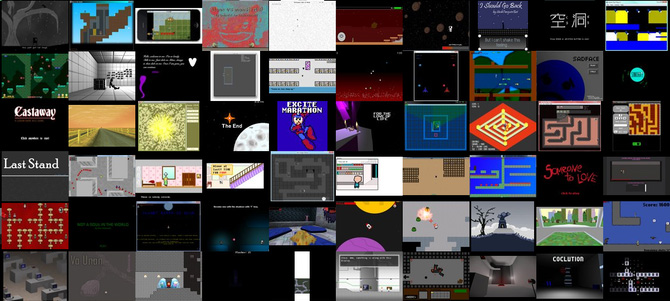
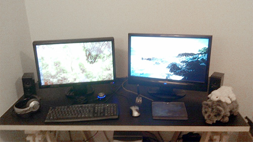
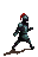
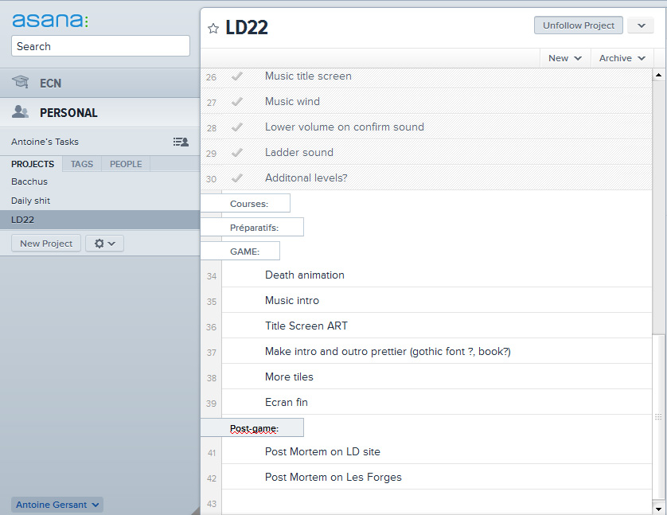
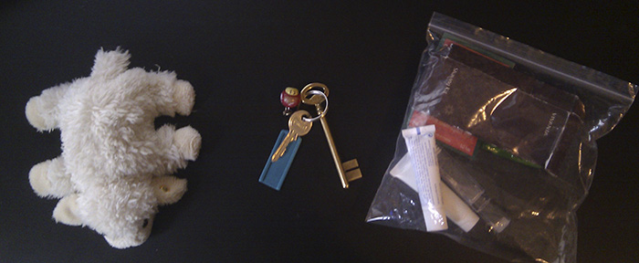
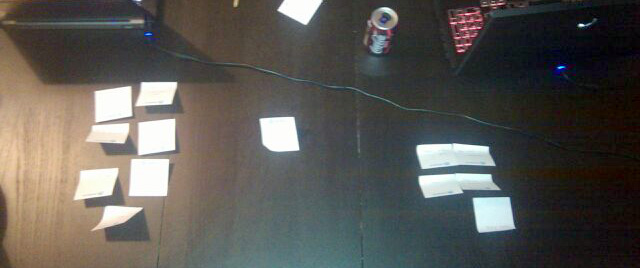

Compte-rendu de Ludum Dare #22
Quatre mois se sont écoulés depuis la précédente édition de Ludum Dare et je ne vais pas vous cacher que j'étais très impatient de participer à nouveau à cet évènement. Pour ceux d'entre vous qui ne seraient pas familiers du principe et qui n'auraient pas lu mon compte-rendu de la précédente édition, rappelons qu'il s'agit d'un weekend pendant lequel des développeurs du monde entier créent des jeux sur un thème imposé. Les participations peuvent se faire soit en 48 heures en solo (la compétition ou compo), soit en groupe en 72 heures (le jam).

Avant
Les préparatifs pour le Ludum Dare commencent plusieurs semaines en avance avec un formulaire où chacun (même les non-participants) peut proposer des thèmes. J'ai tenté ma chance avec PRHÖFESSOR, I CAHN'T CONTRÖL THE MACHINE ANYMORH! parce que sur le moment je trouvais ça rigolo. Malheureusement, des filtres automatiques ont été appliqués pour faire face à l'immense afflux de propositions de thèmes et ma suggestion n'a pas survécu au nettoyage sur les critères « moins de 3 mots » et « n'utilise pas de mots absents du dictionnaire ». Tant pis pour les scientifiques fous à l'accent allemand.
Afin d'être prêt au moment du top-départ (Samedi 19 Décembre à 3h00 du matin heure française), j'ai consacré mon après-midi à de savants préparatifs :
- Faire des courses riches en bacon, Coca Cola, cookies et bière
- Créer un squelette de projet vide prêt à accueillir les premières lignes de code
- Préparer une page web pour distribuer le (futur) jeu fini. Ça fait un peu bizarre de faire ça avant même de commencer le développement du jeu.
- Mettre à jour mon framework personnel, Bacchus, avec quelques fonctionnalités développées récemment sur une branche à part
- Installer et apprendre à utiliser Chronolapse (plus d'infos plus bas dans cet article)
- Annoncer ma candidature et mes outils sur le blog Ludum Dare
- Accorder ma guitare (on ne sait jamais)
- Nettoyer mon bureau qui avait un peu régressé au rang de poubelle à ciel ouvert ces derniers temps
Une heure avant le début de la compétition, je me trouvais fin prêt. Ouf!

Je suis ensuite aller me balader sur le blog de l'évènement et le canal IRC dédiés pour me mettre encore plus dans l'ambiance. J'y ai découvert au détour d'un lien l'existence de Tiled, un éditeur de maps en 2D génériques. Je me suis dit que ça pourrait servir et j'ai consacré ma dernière heure à écrire un parser basique et incomplet (mais fonctionnel) pour pouvoir utiliser si nécessaire des fichiers produits par ce logiciel.
Pendant
A 3h00, le coup d'envoi est donné sur IRC : le thème est Alone. Je suis un peu déçu parce que j'adorais les thèmes Forgotten Places et surtout Shapeshifting pour lesquels j'ai déjà réfléchi à des concepts qui me plaisaient. Au moins le thème n'est pas Kittens (qui a fini bon dernier) comme l'espérait un lobby hyperactif et rigolo qui a inondé le blog Ludum Dare les jours précédents.
Les minutes passent et les bonnes idées ne viennent pas. J'envisage tout d'abord un jeu qui raconte l'histoire d'un marin seul survivant sur un navire et qui meurt à petit feu et où le joueur participe à des mini-jeux qui prennent place dans le souvenirs et les délires du personnage. J'abandonne l'idée car elle oblige à développer plusieurs gameplay de mini-jeux, ce qui ne semble pas très raisonnable. Je pense ensuite à un jeu vu de dessus où l'on incarne un petit garçon dans une école où personne ne lui parle à l'exception d'inquiétants démons que personne ne peut voir sauf lui. A la réflexion, je pense que c'était peut-être ma meilleure idée. Finalement, je me décide à parler d'un chevalier ensorcelé qui se retrouve seul dans un monde mystérieux (que je comptais au départ peupler de ses souvenirs et démons intérieurs).
J'ouvre mon Photoshop préféré et je commence à gribouiller des tiles de jeu de plateforme dans une ambiance crépusculaire (qui est un peu partie à la trappe petit à petit). J'aime bien commencer par des graphismes parce que ça me donne tout de suite une idée de ce à quoi mon jeu va ressembler et c'est motivant pour le programmer. Au petit matin, vers huit ou neuf heures, j'ai terminé mes tiles, un sprite de chevalier, une tombe, une épée et une fleur qui pourront toujours servir. Je m'inquiète beaucoup parce que je ne sais pas encore ce que je vais en faire exactement mais au moins les gens sur IRC et sur le blog disent qu'ils sont très jolis. Au moment d'aller me coucher, je repère que la boîte de Dark Souls en évidence sur mon étagère s'offre à mes yeux dès que je les détourne de l'écran — je la soupçonne très fort de m'avoir influencé sans que je le demande.
Après cinq heures de sommeil, je me lève avec la ferme intention de ne pas me coucher tant que mon jeu ne ressemblera pas à quelque chose. Je décide d'en faire un jeu de plateforme lent et où l'histoire progresse au fur et à mesure que le joueur avance dans les salles. C'est un peu ambitieux quand on sait qu'à ce moment là je n'ai toujours pas de scénario en tête mais au moins ça me fait quelque chose à coder.
Je passe toute la journée à alterner entre « je fais des maps avec Tiled » (j'ai bien fait d'écrire mon parser une heure avant la compétition), « je programme le jeu » et « je fais les animations du chevalier ». Avec le recul, je pense que passer deux heures et demie à faire une animation de marche en 8 frames c'était une très mauvaise idée pour un Ludum Dare.

Arrive le début de la nuit, j'ai l'impression d'être dans un épisode de MacGyver dont le pitch est « Hum… Ok, j'ai un moteur de jeu de plateformes, des falaises, des cailloux, une épée, une fleur et un tombe et je dois les combiner pour faire un jeu ». J'écris une mini-histoire pour relier tout ça (je vous laisse la découvrir en jouant au jeu, le lien est en bas de cet article) et je la mets en place. J'utilise mes dernières forces pour faire le générique de fin et le texte d'introduction ; à ce moment là je suis plus que content d'avoir choisi d'utiliser un outil qui me permet de gérer l'avancement du projet sans tout garder en tête (ce qui est très difficile quand on est fatigué). J'ai choisi Asana que j'utilise déjà sur mes projets à long termes et dont je suis très satisfait d'une manière générale. Je vais finalement me coucher, épuisé mais ravi d'avoir un jeu qui ne demande plus qu'à être mis en musique, décoré et testé avant d'être fini.

Je me lève vers 13h00 et après un copieux casse-croûte j'appelle deux amis nantais pour leur demander s'ils auront le temps de venir faire les beta-testeurs plus tard dans la soirée. Ils sont trop cools donc ils acceptent et ils me proposent même de me ravitailler, ce qui est inutile parce que j'ai encore du bacon et des cookies en quantité suffisante.
Je passe quelques minutes à faire un écran titre (je décide d'appeler le jeu Castaway) et un écran d'instructions très sobres pour pouvoir m'atteler au plus vite aux bruitages et à la musique. Je me dis que BFXR ne sera pas suffisant pour faire des effets sonores qui correspondent à l'ambiance du jeu et je mets à contribution mon micro pourri qui me sert d'habitude à parler sur Teamspeak. En nettoyant un peu les enregistrements et en les refaisant cent fois jusqu'à ce qu'il n'y ait plus d'ambulances dans ma rue pour tout gâcher, j'arrive à un résultat très acceptable vu mon manque d'expérience dans le domaine. Je suis particulièrement satisfait des sons de mort à la Tekken (vous savez, HEUAAARRRHH HEUUuaah heuaah… avec plein de delay) et des bruits de pas. Ci-dessous une photo de différents objets qui ont servi à faire les bruitages du jeu :

Je m'occupe ensuite des musiques, en commençant par les plus importantes (la musique principale et celle d'introduction). Comme il me reste du temps j'écris quelques mesures pour l'écran titre et je fais une piste « grondement mystérieux » pour les maps sans danger. Contrairement au précédent Ludum Dare, j'avais ma guitare et un petit clavier MIDI sous la main ainsi que deux grands écrans pour étaler Reason (mon Photoshop version audio) et j'ai pu travailler vite et bien selon mes standards personnels. En plus, cette fois-ci je n'ai pas perdu la stéréo sur une piste en oubliant de brancher un câble virtuel…
La soirée commence, mes vaillants bêta-testeurs arrivent armés de leurs ordinateurs et de kebabs qui sentent mauvais. Je dîne avec eux et je les installe dans le salon pour ne pas être trop déconcentré quand j'aurai à corriger des bugs compliqués. Je regarde les premiers tests avec anxiété, ils trouvent le jeu très difficile (c'était voulu) mais ils rient beaucoup à chaque fois que l'autre meurt, je trouve ça plutôt encourageant. Étant donné qu'ils repèrent des wagons de bugs, je m'aperçois qu'il va falloir s'organiser un peu et comme je n'ai pas le temps de leur faire découvrir Asana, je transforme la table du salon en un micro-scrumboard à base de post-it. Non seulement c'est marrant mais en plus c'est super pratique.

J'arrive au bout de la longue liste de bugs une heure et demie avant la fin de la compétition et j'en profite pour rajouter, sur suggestion d'un de mes testeurs, une salle cachée avec une armure bonus qui facilite la suite du jeu. Trente minutes plus tard, j'upload la version finale, je remplis le formulaire de participation sur le blog Ludum Dare (qui est à la limite du crash tellement il y a de gens dessus), je rajoute des liens de téléchargement vers la bande son (j'adore le moment où je dois donner des titres aux morceaux qui s'appellent jusqu'ici 0, 1 et 2) et les sources. Il est 2h55, je décapsule ma dernière bière et j'ai un sourire jusqu'aux oreilles.
Après
Comme la première fois que j'ai participé, l'effet Ludum Dare se fait sentir. Il est toujours aussi difficile de se rendre compte que 48 heures plus tôt je me demandais quel serait le thème et que là, paf ! j'ai fabriqué un jeu. Il est très court et pas génial mais il est complet et c'est quelque chose d'incroyable en soi. Enfin je trouve.
Je vous mentionnais tout à l'heure Chronolapse, c'est enfin l'heure de compacter les 4Go de screenshots qu'a pris le logiciel pendant le weekend pour en faire une vidéo. La création de Castaway en moins de 5 minutes ça donne ça :
Les heures et les jours ont depuis commencé à passer et les avis affluent. Le consensus général semble être que le jeu est très joli et peaufiné mais surtout très frustrant. J'ai choisi de rendre le jeu très difficile en faisant un personnage difficile à contrôler (le chevalier a beaucoup d'inertie) mais ça n'a pas l'air de plaire. C'est sans doute l'interaction entre mes deux testeurs qui avait rendu la difficulté amusante, seul ça a surtout l'air énervant. Dommage.
En plus de ça, j'ai appris que le jeu crashait violemment sur un grand nombre de machines. Oups, il manquait une ligne de code pour éviter ça. J'ai depuis publié une version alternative qui est beaucoup plus stable.
Au final, je suis tout de même content du résultat (oui oui, je m'envoie toujours des fleurs) et j'espère qu'il vous plaira aussi. Vous pouvez essayer le produit fini (la version stable) par ici. Je profite aussi de ce court paragraphe pour remercier mes deux testeurs et les différentes personnes qui m'ont encouragé tout au long du weekend.
J'ai commencé à jouer à quelques jeux d'autres personnes et voici les premières perles que j'ai trouvé parmi les 891 participations (!) de cette édition :
- Never Alone Hotline de Pierrec
- Chromboid de Arne, pekuja et BurnZeZ
- Vatnsmyrkr de Skomakarn
Si vous en voulez d'autres, je vous recommande de faire un tour sur Game Side Story qui couvre très bien l'évènement.
Vivement avril prochain pour le prochain Ludum Dare. Mes bonnes résolutions pour la prochaine fois sont de passer moins de temps sur les graphismes, de ne pas faire un jeu de plateformes vu de côté et d'avoir plus de contenu. Espérons que tout cela se réalise ! Enfin, je ne peux que vous encourager à participer vous aussi à cet évènement si amusant et productif. Comme l'a dit quelqu'un sur Twitter, si seulement Ludum Dare avait lieu tous les weekends… on dormirait pendant la semaine !
Ajouter un commentaire
Commentaires

Ah cool, c'était un des trucs qui faisaient que j'hésitais à participer : la perspective de devoir recoder toutes les fonctionalités basiques d'un jeu.

@Gaetz > Oui, on peut utiliser des outils externes à condition de les déclarer au moment où on annonce sa participation (il y a d'ailleurs beaucoup de gens qui utilisent des frameworks genre Flixel ou Pygame).
On a le droit d'utiliser des outils externes pour le Ludum Dare ? Tu parles de Tiled ou de ton framework personnel ?
Merci beaucoup pour les compliments et les encouragements !

C'est fabuleux à lire ! Je pense pas participer au prochain, mais p-e à celui d'après, qui sait… J'espère que tu nous donneras les résultats ! Encore bravo !
(Je m'en vais de ce pas le tester :D)

Toujours aussi fascinant les comptes rendu de ce genre d'expériences ! Ca me donne vachement envie de participer, si seulement je savais faire au moins une chose… ^^'
Pour ton jeu, ben je vais répéter ce qui a été dit. Musique et graphisme impeccable ! Mais c'est vrai que niveau inertie, on dirait qu'il marche dans de la semoule… °°' C'est vrai que ça rend le jeu frustrant et que ça casse complètement le rythme de se ramasser toutes les 30 secondes, ça pourrait faire un super jeu s'il était amélioré ! Moi je l'ai fini sans ragequit également, et assez rapidement quand même ^^'
Merci, Toshi :)
PS : Sans l'armure, je n'arrivais pas à passer le passage à gauche de l'échelle… :S
Jai également participé a ce Ludum Dare :) J'ai trouvé le jeu super (l'ambiance générale surtout) et je n'ai pas du tout trouvé le jeu dur étant doné que j'ai eu l'armure tout de suite!
Nettoyer mon bureau qui avait un peu régressé au rang de poubelle à ciel ouvert ces derniers temps.
En effet :p
Sinon pour le jeu :
- alors niveau ambiance c'est réussi
- niveau difficulté c'est ignoble
- le bonus ruine le GamePlay mais bon c'est un bonus caché
Pour la maniabilité, c'est surprenant de voir une inertie qui te fais penser à des patins à roulettes alors que c'est une "heavy armor".
Et donc autant louper le premier double saut (qui est totalement anti-intuitif) est très drôle : j'avoue m'être jeté ensuite plusieurs fois exprès dans le vide pour voir si comme dans Tomb Raider tu bénéficiais d'un joli panel de cris d'agonie ;)…autant le louper ensuite plusieurs fois sans le vouloir est réellement frustrant.
Au sujet du gamedesign, je déteste quand dans un jeu on te "laisse le choix" sur une action nécessaire. "Voulez-vous réveiller le mal ?" est très drôle mais bon là c'est un peu "Voulez-vous continuer le jeu ?"
Sinon pour revenir sur du positif : l'intro l'ambiance les dessins la petite fleur toute mimi
PS : je suis sûr que mon idée de jeu aurait fait un carton :p

Franchement, félicitations ! Le jeu est juste magnifique et j'adore la musique. Niveau gameplay, c'est vrai que c'est frustrant que la difficulté vienne non pas des situations mais de la façon dont se déplace le personnage… Mais je l'ai fini sans ragequit ! J'adore l'ambiance aussi :) Faudrait vraiment que je me donne la motivation pour participer.. Je pense pas avoir les compétences pour faire un bon truc, mais ça ne me fera jamais de mal.
Encore une fois, bravo :)
Encore une fois c'est captivant de lire le compte-rendu de Ludum Dare, et là je viens de relancer le jeu. Je l'ai déjà fini, mais je n'ai pas trouvé cette armure secrète! Qu'à cela ne tienne, je m'en vais quérir cette récompense ^^